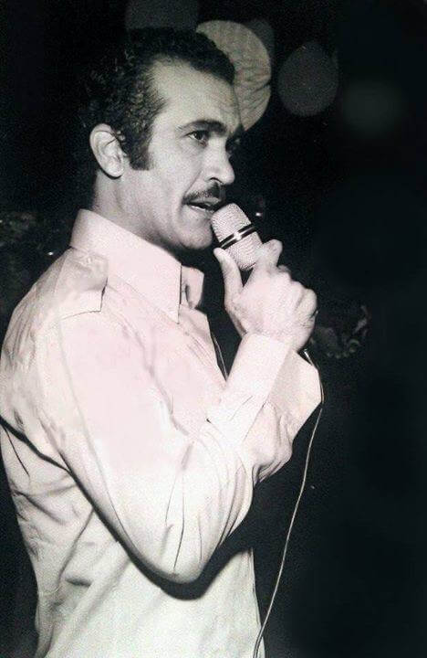
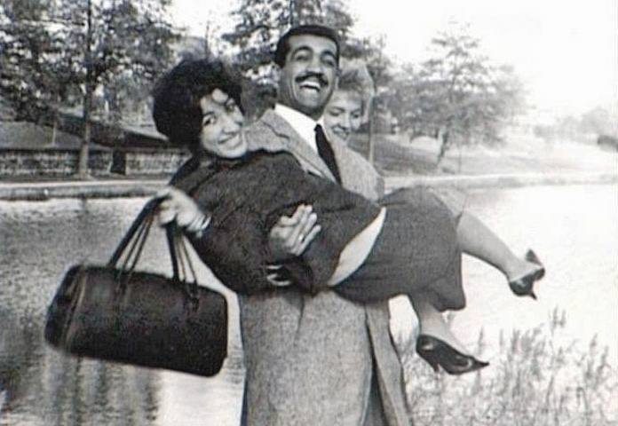
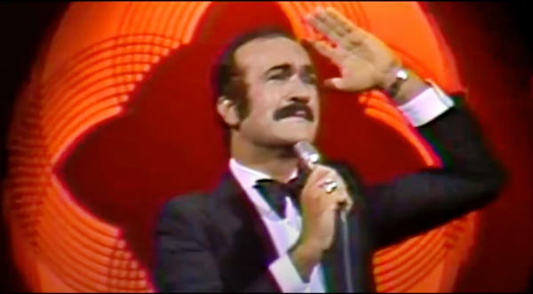

Biography
Music
Poetry
Videos
You can download the full collection of Farrokhzad's music here:
[Google Drive]

Famous and obscure songs by Fereydoon Farrokhzad:
Ashiyaneh
Farrokhzad's International Queer Comrades
·
Fereydoon Farrokhzad - Ashiyaneh
Harki Nadooneh Man Midoonam
Farrokhzad's International Queer Comrades
·
Fereydoon Farrokhzad - Harki Nadooneh Man Midoonam
Yek Gandom
Farrokhzad's International Queer Comrades
·
Fereydoon Farrokhzad - Yek Gandom
Do Ashena Do Hamzod
Farrokhzad's International Queer Comrades
·
Fereydoon Farrokhzad - Do Ashena Do Hamzod
Fereydoon sings Forough's lyrics:
Dar Abhaye Sabze Tabestan
Farrokhzad's International Queer Comrades
·
Fereydoon Farrokhzad - Dar Abhaye Sabze Tabestan
Sabr-e Sang
Farrokhzad's International Queer Comrades
·
Fereydoon Farrokhzad - Sabr-e Sang
Asheghaneh Masnavi
Farrokhzad's International Queer Comrades
·
Fereydoon Farrokhzad - Asheghaneh Masnavi


Protest songs:
Enghelab
Farrokhzad's International Queer Comrades
·
Fereydoon Farrokhzad - Enghelab
Iran Gharghe Enghelab Ast
Farrokhzad's International Queer Comrades
·
Fereydoon Farrokhzad - Iran Gharge Enghelab Ast
Hamrazmanam
Farrokhzad's International Queer Comrades
·
Fereydoon Farrokhzad - Hamrazmanam
Baraye Watan Be Pish
Farrokhzad's International Queer Comrades
·
Fereydoon Farrokhzad - Baraye Watan Be Pish (Einheitsfrontlied)